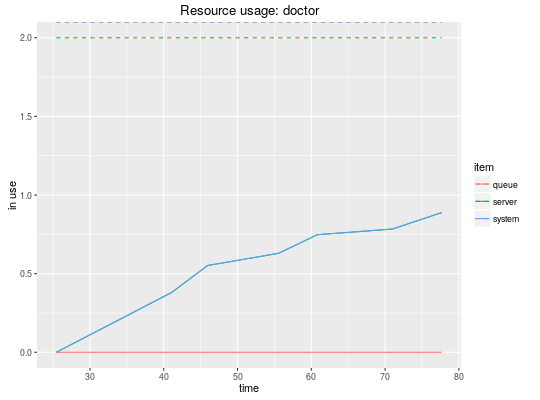

simmer(name = "anonymous", verbose = FALSE)
This method initialises a simulation environment.
t0 <- create_trajectory("my trajectory") %>% ## add an intake activity seize("nurse", 1) %>% timeout(function() rnorm(1, 15)) %>% release("nurse", 1) %>% ## add a consultation activity seize("doctor", 1) %>% timeout(function() rnorm(1, 20)) %>% release("doctor", 1) %>% ## add a planning activity seize("administration", 1) %>% timeout(function() rnorm(1, 5)) %>% release("administration", 1) env <- simmer("SuperDuperSim") %>% add_resource("nurse", 1) %>% add_resource("doctor", 2) %>% add_resource("administration", 1) %>% add_generator("patient", t0, function() rnorm(1, 10, 2)) env %>% run(until=80)simmer environment: SuperDuperSim | now: 80 | next: 83.081692634281 { Resource: nurse | monitored: 1 | server status: 1(1) | queue status: 2(Inf) } { Resource: doctor | monitored: 1 | server status: 1(2) | queue status: 0(Inf) } { Resource: administration | monitored: 1 | server status: 1(1) | queue status: 0(Inf) } { Generator: patient | monitored: 1 | n_generated: 8 }Warning message: failed to assign NativeSymbolInfo for env since env is already defined in the ‘lazyeval’ namespace
reset, now, peek, onestep, run,
add_resource, add_generator, get_mon_arrivals,
get_mon_attributes, get_mon_resources, get_n_generated,
get_capacity, get_queue_size, set_capacity,
set_queue_size, get_server_count, get_queue_count.